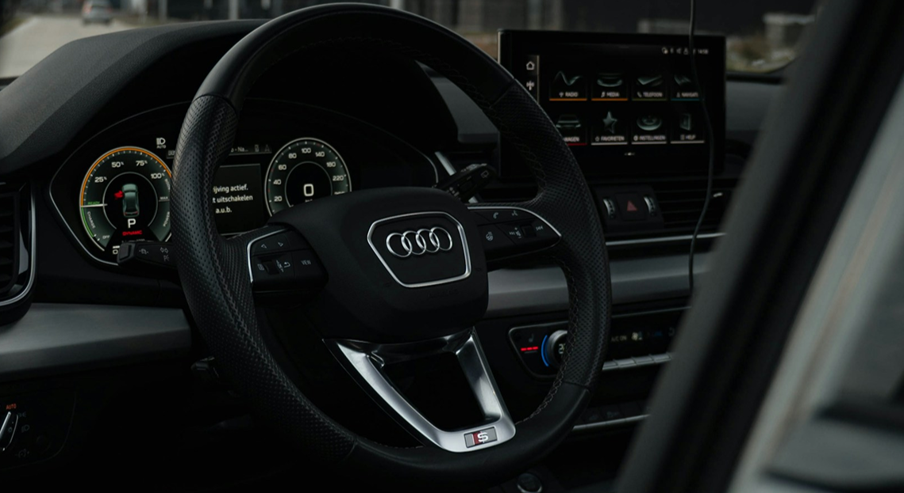
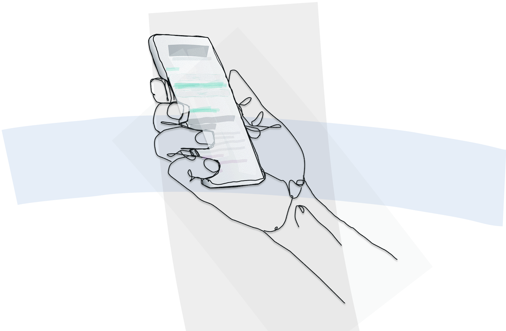
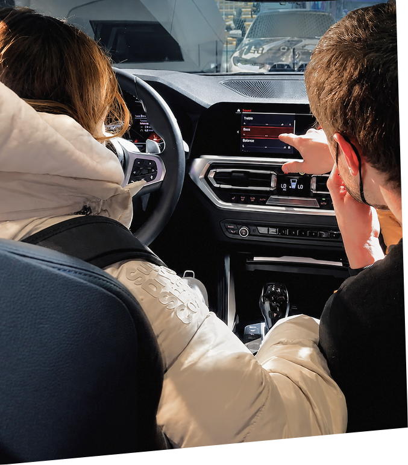
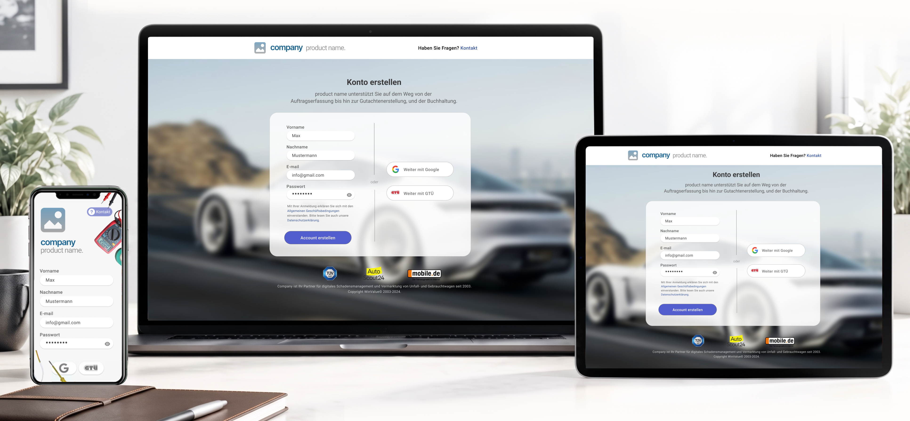

Core responsibilities included defining detailed UX requirements, translating stakeholder and system-level inputs into structured interface concepts, and collaborating closely with development teams to ensure accurate implementation. Design work covered wireframes, user flows, and high-fidelity prototypes as well as the development of UI components aligned with each brand's corporate identity and visual language.

In addition, involvement in usability testing and interface validation supported the optimization of key infotainment features, including navigation systems, media interfaces, settings, and privacy-related menus. A strong focus was placed on ensuring clarity, consistency, and seamless cross-functional execution throughout the development process.
DESIGN
Paul Watzlawick’s idea that “one cannot not communicate” applies not only to human communication, but to design as well. Every design choice communicates something, from color and typography to the overall visual language. That’s why it’s important to consider not only what a design does, but also how it feels and how it reflects the brand identity.


in-car
infotainment
systems
In my role as UX Designer, I worked on in-car infotainment and entertainment system interfaces for premium automotive brands, including BMW and Audi. The work focused on designing and refining user interfaces across digital cockpit environments, with a strong emphasis on usability, information architecture, and brand-consistent interaction design.
webdesign

During my work as a UX and Web Designer at WinValue, I was tasked with redesigning the interface of a vehicle analysis tool. The goal was to create a more modern and intuitive experience while making the large amount of information easier to navigate.
I restructured the input fields and filters into clearer categories and refined the visual hierarchy to make the most important elements easier to identify. Typography, contrast and input styling were also adjusted to improve readability and accessibility.
app design
Great app design is not about just making things look pretty; it is about taking full ownership from raw wireframes to pixel-perfect interfaces that people actually enjoy using. Living and breathing Figma daily, I translate intricate product logic into fluid, intuitive user flows. Apple’s Human Interface Guidelines and Google’s Material Design principles are second nature to me, ensuring every screen feels sharp, responsive, and native to the platform.
Design does not stop at handover either. I treat UX as a continuously evolving craft, constantly challenging assumptions through hands-on usability testing, user feedback, and data-driven iterations. From establishing scalable design tokens and robust component architectures to obsessing over the physics of micro-interactions, every detail is intentional.
By bridging the gap between bold aesthetics and real-world engineering constraints, I ensure that ambitious visual concepts survive the development phase without losing their punch. The end goal is always simple: unapologetically user-centered design that looks stunning, solves real problems, and just works.
The interface responds to the user's selections by revealing additional options when needed. Visual cues, including changing vehicle imagery, help users keep track of the selected vehicle category and reduce potential selection errors.
The redesign also follows the visual language used throughout the product, creating a more consistent and cohesive user experience.
I also gained valuable experience working as a freelancer, designing a website for the cultural association Signal e.V. tailored specifically to the needs of the cultural sector. In addition, through my work with another company, I contributed to the development of web interfaces designed to present numerical data in a clear and aesthetically engaging way. Collaborating closely with developers and data analysts allowed me to create designs that were both highly functional and visually compelling.
The interface responds to the user's selections by revealing additional options, using visual cues to help users track the selected vehicle category and reduce errors.
Beyond WinValue, I designed a website for Signal e.V. and contributed to data-visualization web interfaces, working closely with developers and analysts to deliver functional, visually compelling results.